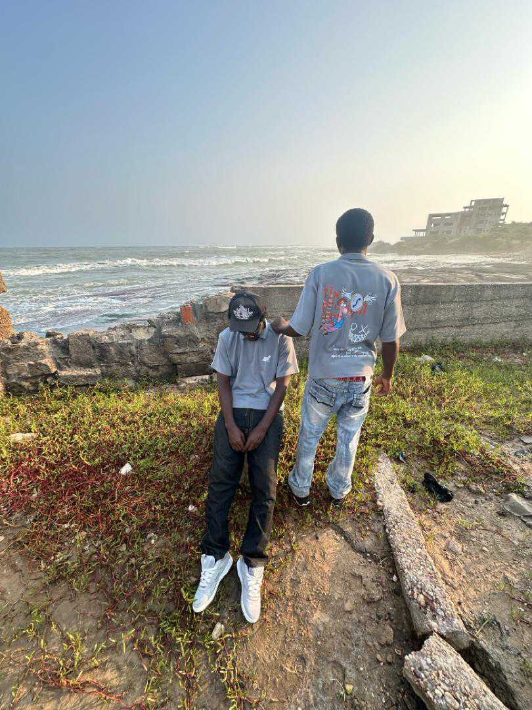

The prodigal brand (TPS), one of the growing clothing community in GHANA.
Welcome to Prodigal Where Passion,Innovation,Expertise,Meets Purpose
At Prodigal Clothing Community(TPS), we believe in embracing the journey of the fashion humour worldwide, learning from the past, and forging a new path forward. Our name, inspired by the parable of the prodigal son, represents our commitment to second chances, redemption, and the pursuit of excellence.
With [number] years of experience in [industry/field], our team is dedicated to delivering [unique value proposition] that empowers [target audience] to [desired outcome]. Explore our website to discover how our [products/services] can help you [achieve your goals]."
Products produced by TPS.
 clothing brand
clothing brand